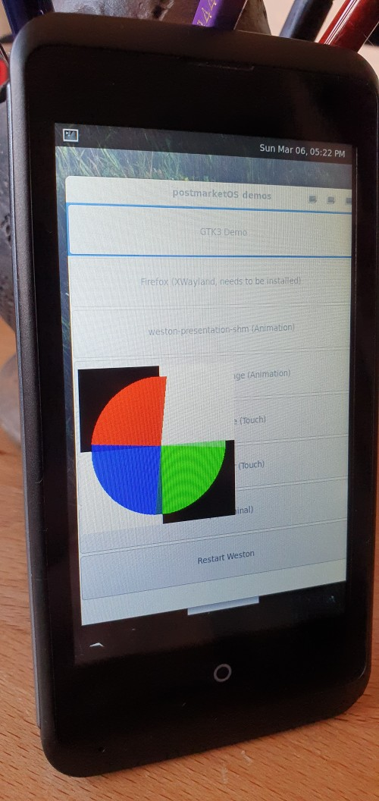

ZTE Kis 3 (zte-kis3)
Jump to navigation
Jump to search
|
 ZTE kis3 / OpenC running postMarketOS & weston | |
| Manufacturer | ZTE |
|---|---|
| Name | Open C / Kis 3 |
| Codename | zte-kis3 |
| Released | 2014 |
| Category | testing |
| Original software | Firefox OS |
| Original version | 1.3 (Open C) |
| Hardware | |
| Chipset | Qualcomm Snapdragon 200 (MSM8210) |
| CPU | Dual-core 1.2 GHz Cortex-A7 |
| GPU | Adreno 302 |
| Display | 480x800 |
| Storage | 4 GB |
| Memory | 512 MB |
| Architecture | armv7 |
| Type | handset |
{kind=link}
| USB Networking |
Works
|
|---|---|
| Flashing |
Partial
|
| Touchscreen |
Works
|
| Display |
Works
|
| WiFi |
Works
|
| FDE | |
| Mainline | |
| Battery | |
| 3D Acceleration | |
| Audio | |
| Bluetooth | |
| Camera | |
| GPS | |
| Mobile data | |
| SMS | |
| Calls | |
| USB OTG / USB-C Role switching | |
| NFC | |
| Accelerometer | |
|---|---|
| Magnetometer | |
| Ambient Light | |
| Proximity | |
| Hall Effect | |
| Barometer | |
| Power Sensor | |
| Camera Flash | |
|---|---|
| Keyboard | |
| Touchpad | |
| USB-A | |
| HDMI/DP | |
| Ir TX | |
| Ir RX | |
| Stylus | |
| Haptics | |
| Ethernet | |
| FOSS bootloader | |
Contributors
Users owning this device
- Bonsaiblue
- GloomyJD (Notes: Works, Open C variant)
- JuniorJPDJ
- Mossroy (Notes: ZTE Open C, FR version. I have several devices. One of them has a broken and unusable screen, I can use it to test as much as needed)
- Mtheunis
How to enter flash mode
- Press Volume down + power button until you see the, the boot logo will stay displayed.
or
- Boot into recovery,firefoxOS or android and run
adb reboot bootloader
How to enter recovery mode
- Turn off the phone, e.g. by taking out battery or holding down Power button.
- Press and hold Volume Up + Home + Power button for about 5 seconds.
- Press Power button to enter recovery mode
or
- Press volume up + power key to enter recovery
| works on some other versions of the phone? |
Installation
Backup
- Download TWRP recovery image (see links) and save as recovery.img
- Insert SDCard with enough space for backup
- Boot into bootloader (see How to enter flash mode above)
- Run
fastboot boot recovery.imgto boot the TWRP recovery without flashing it - Go to 'Backup' and select SDCard as storage; swipe to start backup; wait until backup is finished. Take out SDCard.
Flashing TWRP
- Boot into bootloader (
adb reboot bootloader) - Run
fastboot flash recovery recovery.img
Flashing postmarket OS
Flash using an external SD card for system, boot kernel without flashing through fastboot. Fastboot seems to crash when flashing system and using an Android recovery zip seemed unsuccessful as well.
- Follow the installation guide to init pmbootstrap
- Put pmos on an SD card:
pmbootstrap install --sdcard=/dev/sdX(change /dev/sdX to the SD card) - Insert SD card into phone.
- Put phone into fastboot mode (see above)
- Boot kernel without flashing:
pmbootstrap flasher boot - You should be able to see and ping the phone via network over USB soonish, but booting to the point where the ssh daemon takes approx 60s.
Wifi
wifi works
In order to start the wifi you have to load the kernel module and bring the interface up with the following commands:
sudo modprobe wlan sudo ifconfig wlan0 up
See also
- Lineage port, TWRP, Clockwork mod by KonstaKang
- Android Source
- Android Kernel sources
- Proprietary blobs
- Open C Firefox OS related resources
- ZTE Jelly Bean Kernel sources
- Kis hardware info tool with screenshots
- hardware info on ZTE Open C
- original pull request by ethanrjones97
- how ethanrjones97 fixed black screen
- Device package
- Kernel package
- info on ZTE Open C
- merge request #2914 fixing wifi/slow start-up/screen